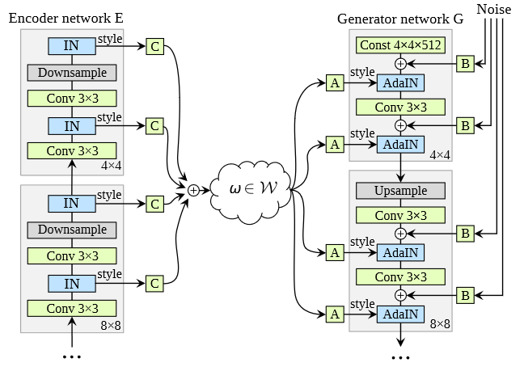

\(
\def\sc#1{\dosc#1\csod}
\def\dosc#1#2\csod{{\rm #1{\small #2}}}
\newcommand{\dee}{\mathrm{d}}
\newcommand{\Dee}{\mathrm{D}}
\newcommand{\In}{\mathrm{in}}
\newcommand{\Out}{\mathrm{out}}
\newcommand{\pdf}{\mathrm{pdf}}
\newcommand{\Cov}{\mathrm{Cov}}
\newcommand{\Var}{\mathrm{Var}}
\newcommand{\ve}[1]{\mathbf{#1}}
\newcommand{\mrm}[1]{\mathrm{#1}}
\newcommand{\etal}{{et~al.}}
\newcommand{\sphere}{\mathbb{S}^2}
\newcommand{\modeint}{\mathcal{M}}
\newcommand{\azimint}{\mathcal{N}}
\newcommand{\ra}{\rightarrow}
\newcommand{\mcal}[1]{\mathcal{#1}}
\newcommand{\X}{\mathcal{X}}
\newcommand{\Y}{\mathcal{Y}}
\newcommand{\Z}{\mathcal{Z}}
\newcommand{\x}{\mathbf{x}}
\newcommand{\y}{\mathbf{y}}
\newcommand{\z}{\mathbf{z}}
\newcommand{\tr}{\mathrm{tr}}
\newcommand{\sgn}{\mathrm{sgn}}
\newcommand{\diag}{\mathrm{diag}}
\newcommand{\Real}{\mathbb{R}}
\newcommand{\sseq}{\subseteq}
\newcommand{\ov}[1]{\overline{#1}}
\DeclareMathOperator*{\argmax}{arg\,max}
\DeclareMathOperator*{\argmin}{arg\,min}
\newcommand{\data}{\mathrm{data}}
\newcommand{\N}{\mathcal{N}}
\)
GAN-Autoencoder Hybrids
There are many papers that try to combine GANs and autoencoders, be it the plain version or the VAE. I'm interested in these papers because, if we succeed in training one, we get an efficient GAN projection which we can reuse for other purposes later.
Adversarial Latent Autoencoder (CVPR 2020)
- Here's the [LINK].
- For this paper, we use the following notation:
- The space of images is denoted by $\mathcal{X}$. An element of this space is denoted by $\ve{x}$.
- The space of latent codes is denoted by $\mathcal{Z}$. An element of this space is denoted by $\ve{z}$.
- This is the space that we impose a simple prior distribution such as $\N(\ve{0}, I)$ on.
Background: StyleGAN
- I think this paper is heavily influenced by the StyleGAN paper.
- In the StyleGAN paper:
- They say there should be another space of latent code
- They call this space $\mathcal{W}$. An element of this space is denoted by $\ve{w}$.
- To avoid confusion, let us call $\ve{z}$ the input latent code and $\ve{w}$ the intermediate latent code.
- Predictably, $\mathcal{Z}$ is called the input latent space and $\mathcal{W}$ the intermediate latent space.
- They introduce a generator architecture where the overall generator $\mathtt{G}$ is decomposed into two subnetworks.
- The non-linear mapping network $F: \mathcal{Z} \rightarrow \mathcal{W}$.
- The image generator network $G: \mathcal{W} \times \Xi \rightarrow \mathcal{X}$.
- Here, $\Xi$ is the space of random noise. An element of $\Xi$ is denoted by $\xi$, which is introduced to make the generated images more random.
- A sample is generated by the following process:
- Sample $\ve{z}$ from $\mathcal{Z}$ and $\xi$ from $\Xi$.
- Compute $\ve{x} = G(F(\ve{z}), \xi)$.
- $G$ generates images from a fixed input. The image that $G$ generates is primary controlled by the style parameters that control AdaIN units that are present in the network. The style parameters are derived from $\ve{w} = F(\ve{z})$.
- The paper found that $\mathcal{W} = \{ F(\ve{z})\ |\ \ve{z} \in \mathcal{Z} \}$ is more disentangled than $\mathcal{Z}$ in the sense that:
- It is much more linearly separable.
- The "perceptual path lengths" when interpolating between two latent codes in $\mathcal{W}$ are shorter than when interpolating between two latent codes in $\mathcal{Z}$. (See the StyleGAN paper for details on how the perceptual path lenght is defined.)
Network Structure
- The overall structure of an adversarial latent autoencoder (ALAE) is that of a GAN. We have a generator $\mathtt{G}$ and a discriminator $\mathtt{D}$.
- The generator follows the design of the StyleGAN paper: $\mathtt{G}(\ve{z}, \xi) = G(F(\ve{z}), \xi)$.
- The discriminator $\mathtt{D}$ is decomposed into to modules:
- The encoder $E: \mathcal{X} \rightarrow \mathcal{W}$.
- The latent discriminator $D: \mathcal{W} \rightarrow \Real$.
The overall discriminator is defined by $\mathtt{D}(\ve{x}) = D(E(\ve{x})).$
- An interesting thing is that the discriminator now works by looking if the immediate latent code looks real or not.
- What the ALAE can do that normal GANs cannot do is projecting real data samples into the space of images it generates. That is, if we have an image $\ve{x}$, we can reconstruct the image with the ALAE as follow:
$$\ve{x}' = G(E(\ve{x}), \xi)$$
where $\xi$ is a random vector from $\Xi$.
- I think we can use $\ve{x}'$ for other tasks; for example, filling holes or improving image quality. More research needs to be done on this, of course.
Loss Functions
- Predictably, the paper use the standard GAN training objective:
\begin{align*}
\min_{F,G} \max_{E,D}
E_{\ve{x} \sim p_{\data}(\ve{x})} [ \mrm{SoftPlus}(\mathtt{D}(\ve{x})) ]
+ E_{\ve{z} \sim \N(\ve{0},I), \xi \sim \Xi} [ \mrm{SoftPlus}(- \mathtt{D}(\mathtt{G}(\ve{z},\xi))) ]
\end{align*}
where $\mrm{SoftPlus}(t) = \log(1 + e^t)$, which is a smooth version of the ReLU function. (In effect, they used a smoothed hinge loss.)
- The ALAE combines a GAN with an autoencoder by imposing an autoencoder structure on the intermediate latent codes. That is, for all input latent code $\ve{z}$ and random vector $\xi$, it should be that
\begin{align*}
F(\ve{z}) \approx E(G(F(\ve{z}), \xi)).
\end{align*}
So, they add another objective:
\begin{align*}
\min_{G,E} E_{\ve{z} \sim \N(\ve{0},I), \xi \sim \Xi} \| F(\ve{z}) - E(G(F(\ve{z}), \xi)) \|_2^2.
\end{align*}
Note that the minimization is only over $G$ and $E$, indicating that they should autoencode the intermediate latent space. I think this frees $F$ to produce a mapping that disentagle the $\mathcal{Z}$ space without having to worry about what the distribution might look like, other than that the mapping should produce realistic images in the end.
- It is interesting that the paper chooses to impose the reconstruction loss on the intermediate latent space. This is a good idea because doing so on the image space results in poor image quality (e.g., using L1 or L2 loss results in blurry image, and using perceptual loss would get you artifacts).
Training Procedure
- In each training iteration, there would be three steps to update the parmeters:
- First, the GAN loss for the discriminator would be evaluated, and the gradient would be used to update the parameters of $E$ and $D$.
- Second, the GAN loss for the generator would be evaluated, and the gradient would be used to update the parameters of $F$ and $G$.
- Third, the reconstruction loss would be evaluated, and the gradient would be used to update the parameters of $G$ and $E$.
StyleALAE
- Another contribution of the paper is the design of an ALAE architecture based on the StyleGAN architecture.
- For StyleALAE, they use the same architecture for $F$ and $G$ as in the StyleGAN paper.
- $D$ is an MLP with 3 layers.
- The novel bit is the architecture for $E$, which is depicted in the image below:

- The design is symmetric to the image generator $G$.
- The input image $\ve{x}$ would go through a series of downsampling modules, which will reduce the image size to $4 \times 4$ finally.
- In each module, there are two instance normalization (IN) layers that would extract style information.
- The extracted style information would then be linearly transformed and added to form the intermediate latent vector $\ve{w}$.
Adversarial Autoencoder (ICLR 2016)
- Paper: [LINK]
- The goal of the paper is the same as the VAE paper: generative modeling. However, they also show applications in other tasks, but I'm not interested in those tasks currently.
- The paper constructs an autoencoder that has an encoder $E$ and a decoder $D$.
- For this paper, we will use the notation I used in the VAE note.
- $\ve{z}$ denotes a latent code.
- $\ve{x}$ denotes a data vector.
- $p(\ve{z})$ denotes the prior distribution of the latent code. This is often $\N(\ve{0},I)$.
- $p(\ve{x}|\ve{z})$ is the decoding distribution. This is the distribution that results from feeding the decoder $\ve{z}$ and let it sample a $\ve{x}$.
- $q(\ve{z}|\ve{x})$ is the encoding distribution. This is the distribution that results from feeding the encoder $\ve{x}$ and let it sample a $\ve{z}$.
- All of the the encoding distributions define a marginal distribution of the latent codes:
\begin{align*}
q(\ve{z}) = \int_{\ve{x}} q(\ve{z}|\ve{x}) p_{\data}(\ve{x})\,\dee\ve{x}.
\end{align*}
- An adversarial autoencder (AAE) is an autoencoder that is trained so that $q(\ve{z})$ is contrained to match an arbitrary $p(\ve{z})$. It does so by using adversarial training to force $q(\ve{z})$ to match $p(\ve{z})$.
- Under the GAN framework, the encoder $E$ serves as the generator. It now has to achieve two goals:
- To generate a latent code $\ve{z}$ that the decoder can use to reconstruct $\ve{x}$.
- To generate a latent code $\ve{z}$ that looks like it comes from sampling the prior distribution $p(\ve{z})$.
- Training has two phases in each iteration.
- Reconstruction phase. We update the encoder and the decoder to minimize the reconstruction loss:
\begin{align*}
E_{\ve{x} \sim p_{\data}(x), \ve{z} \sim q(\ve{z}|\ve{x})} [-\log p(\ve{x}|\ve{z})].
\end{align*}
- Regularization phase. We update the encoder and the discriminator to optimize the GAN losses. Let $\tilde{D}$ denote the discriminator. We minimize:
\begin{align*}
\mathcal{L}_{\tilde{D}} &= E_{\ve{z} \sim p(\ve{z})} [-\log \tilde{D}(\ve{z})] + E_{\ve{x} \sim p_{\data}(\ve{x}), z \sim q(\ve{z}|\ve{x})} [-\log (1 - \tilde{D}(\ve{z}))] \\
\mathcal{L}_{E} &= E_{\ve{x} \sim p_{\data}(\ve{x}), z \sim q(\ve{z}|\ve{x})} [-\log \tilde{D}(\ve{z})].
\end{align*}
- There are several ways to implement the encoder.
- Use a deterministic function.
- Use a Gaussian posterior like the VAE paper.
- Training the decoder as a universal posterior approximator.
- Suppose the encoder is a function $E(\ve{x}, \xi)$ where $\xi$ denotes a random noise vector.
- We have that:
\begin{align*}
q(\ve{z}|\ve{x}) = \int_{\ve{z}} q(\ve{z}|\ve{x},\xi) p(\xi)\, \dee\xi.
\end{align*}
So,
\begin{align*}
q(\ve{z}) = \int_{\ve{x}} \int_{\ve{z}} q(\ve{z}|\ve{x},\xi) p(\xi) p_{\data}(\ve{x}) \, \dee\xi \dee\ve{x}.
\end{align*}
- Now, $q(\ve{z}|\ve{x})$ does not have to be a Gaussian like in the previous item. We can choose any distribution as long as (1) we know how to efficiently sample it, and (2) the reparameterization trick can be used to write the encoder as a determinisfunction $f(\ve{x}, \xi)$.
- The paper observed that a deterministic decoder does not have an extra source of randomness like the other methods. So, $q(\ve{z})$ might not be smooth. However, they obtained similar test results after trying a lot of combinations, so they reported results with only the deterministic encoder.
- I said in my VAE note that the KL divergence term in the ELBO is an overkill because it tries to match the encoding distribution $q(\ve{z}|\ve{x})$ of all $\ve{x}$ to the prior $p(\ve{z})$. However, what we really want is to match the marginal distribution $q(\ve{z})$ to $p(\ve{z})$. The AAE paper tries to do this exactly through adversarial training.
Autoencoding GANs
- This is a paper by Conor Lazarou who seems to be a practicing data scientist with no publication track records.
- The paper does introduce a nice and simple idea, but it needs more evaluation. The author only evaluates the algorithm on an anime face dataset (this one). This paper definitely needs more work.
- The construction of the autoencoding GANs (AEGAN) requires 4 networks:
- The encoder $E: \mathcal{X} \rightarrow \mathcal{Z}$.
- The generator $G: \mathcal{Z} \rightarrow \mathcal{X}$.
- The data discriminator $D_{\mathcal{X}}: \mathcal{X} \rightarrow \Real$.
- The latent code discriminator $D_{\mathcal{Z}}: \mathcal{Z} \rightarrow \Real$.
- The main ideas of the paper are:
- Impose adversarial losses on 4 objects:
- The generated samples $\{ G(\ve{z})\ |\ \ve{z} \sim p(\ve{z}) \}$.
- The reconstructed samples $\{ G(E(\ve{x})) \ |\ \ve{x} \sim p_\data(\ve{x}) \}$.
- The encoded latent codes $\{ E(\ve{x}) \ |\ \ve{x} \sim p_\data(\ve{x}) \}$
- The reconstructed latent codes $\{ E(G(\ve{z})) \ |\ \ve{z} \sim p(\ve{z}) \}$
All the networks that are involved with creating these objects should receive guidance from the discriminators ( $D_{\mathcal{X}}$ and $D_{\mathcal{Z}}$) of the appropriate domains. This process result the following losses:
\begin{align*}
\mathcal{L}_{D_\mathcal{X}}
&= E_{\ve{x} \sim p_{\data}(\ve{x})} [-\log(D_\mathcal{X}(\ve{x}))]
+ E_{\ve{z} \sim p(\ve{z})} [-\log(1- D_\mathcal{X}(G(\ve{z})))]
+ E_{\ve{x} \sim p_{\data}(\ve{x})} [-\log(1- D_\mathcal{X}(G(E(\ve{x}))))] \\
\mathcal{L}_{D_\mathcal{Z}}
&= E_{\ve{z} \sim p(\ve{z})} [-\log(D_\mathcal{Z}(\ve{z}))]
+ E_{\ve{x} \sim p_\data(\ve{x})} [-\log(1- D_\mathcal{Z}(E(\ve{x})))]
+ E_{\ve{z} \sim p(\ve{z})} [-\log(1- D_\mathcal{Z}(E(G(\ve{z}))))] \\
\mathcal{L}_{G,E}
&= E_{\ve{z} \sim p(\ve{z})}[ -\log(D_{\mathcal{X}}(G(\ve{z})))]
+ E_{\ve{x} \sim p_\data(\ve{x})}[ -\log(D_{\mathcal{X}}(G(E(\ve{x}))))]
+ E_{\ve{x} \sim p_\data(\ve{x})}[ -\log(D_{\mathcal{Z}}(E(\ve{x})))]
+ E_{\ve{z} \sim p(\ve{z})}[ -\log(D_{\mathcal{Z}}(E(G(\ve{z}))))]
\end{align*}
- Impose reconstruction losses on the reconstructed samples and latent codes:
\begin{align*}
\mathcal{L}_{\mrm{recon}}
&= E_{\ve{x} \sim p_\data(\ve{x})} [ \| \ve{x} - G(E(\ve{x})) \|_1 ]
+ E_{\ve{z} \sim p(\ve{z})} [ \| \ve{z} - E(G(\ve{z})) \|_1 ]
\end{align*}
- The paper compares the AEGAN with the vanilla GAN and the AAE. The author found that the AEGAN yielded better sampled and reconstructed images than the AAE.
Last modified: 2020/07/26